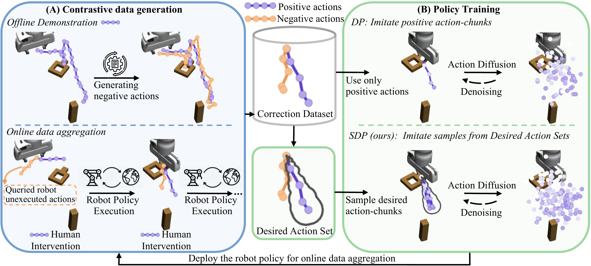

Learning Action-Chunking Diffusion through Corrections

Abstract. Diffusion policies have recently emerged as a powerful framework for robotic manipulation. However, like other behavior cloning methods, they remain vulnerable to distributional shift, often requiring human-in-the-loop interventions to correct failures during deployment. These interactions naturally provide paired supervision in the form of the robot’s undesired actions and the human teacher’s corrective actions. Yet existing data aggregation pipelines and standard behavior cloning losses largely ignore this negative signal from undesired actions, leading to overfitting to teacher's actions and an increasing reliance on costly expert data.
To address this limitation, we propose Set-Supervised Diffusion Policy (SDP), a novel learning framework that utilizes contrastive action-chunk data to train diffusion policies from human corrections. From paired positive and negative action-chunks, SDP constructs a set of desired action-chunks and designs a training pipeline that encourages the diffusion policy to align with the set. Through extensive experiments across multiple robotic manipulation tasks, we demonstrate that SDP consistently improves policy performance, with particularly strong gains in robustness to noisy data. Moreover, SDP induces high-quality aggregated datasets, enabling more efficient and reliable policy learning from human-in-the-loop corrections.
Highlights
Construction of desired aciton set for action-chunks
Sampling desired action-chunks
Insert-T task
SDP completes contact-rich insertion
after learning from corrections.
Roundtable Assembly
SDP (ours) success
thanks to effective usage of corrections.
Roundtable Assembly
DP Common failure mode
distributional drift during rollout.
Real-Robot Experiments
We evaluate SDP on two long-horizon real-robot manipulation tasks: multi-modal Insert-T and round-table assembly. Human corrections provide paired positive and negative action-chunks, allowing SDP to learn from intervention feedback instead of only imitating the corrected action.
Example of Human Intervention
During deployment, a human teacher intervenes with a 6D space mouse to correct undesired end-effector motions. These corrections form contrastive action data: the robot's attempted action is treated as negative, while the human correction is treated as positive.
Policy Rollout in Insert-T Task after Training
Insert-T requires contact-rich pushing to align and insert a T-shaped object into a U-shaped object. SDP consistently improves over DP, with the largest gains on harder initial states because it can use both corrective actions and the negative actions that caused interventions.
Policy Rollout in Round-table Task after Training
Round-table assembly is a long-horizon task where small errors can compound across stages. Corrections concentrate around bottleneck stages such as inserting parts, and SDP makes better use of this corrective feedback than DP, leading to stronger stage-wise and overall success.
Acknowledgements
This project is made possible by a contribution from the National Growth Fund program NXTGEN Hightech. We also acknowledge the Delft AI Cluster (DAIC) for providing computational resources. We'd like to thank Rodrigo Pérez-Dattari for helpful discussions, and Qifan Luo and Zi Huang for their valuable feedback on the code repository.
BibTeX
title={Set-Supervised Diffusion Policy: Learning Action-Chunking Diffusion through Corrections},
author={Li, Zhaoting and Chen, Gang and Alonso-Mora, Javier and Della Santina, Cosimo and Kober, Jens},
booktitle={Robotics: Science and Systems 2026},
year={2026},
}